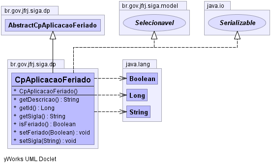

br.gov.jfrj.siga.dp
Class CpAplicacaoFeriado
java.lang.Object
 br.gov.jfrj.siga.model.ObjetoBase
br.gov.jfrj.siga.model.Objeto
br.gov.jfrj.siga.dp.AbstractCpAplicacaoFeriado
br.gov.jfrj.siga.dp.CpAplicacaoFeriado
br.gov.jfrj.siga.model.ObjetoBase
br.gov.jfrj.siga.model.Objeto
br.gov.jfrj.siga.dp.AbstractCpAplicacaoFeriado
br.gov.jfrj.siga.dp.CpAplicacaoFeriado
- All Implemented Interfaces:
- Selecionavel, java.io.Serializable
public class CpAplicacaoFeriado
- extends AbstractCpAplicacaoFeriado
- implements java.io.Serializable, Selecionavel
- See Also:
- Serialized Form
-
-

| Methods inherited from class br.gov.jfrj.siga.dp.AbstractCpAplicacaoFeriado |
getCpOcorrenciaFeriado, getDpLotacao, getFgFeriado, getIdAplicacao, getLocalidade, getOrgaoUsu, setCpOcorrenciaFeriado, setDpLotacao, setFgFeriado, setIdAplicacao, setLocalidade, setOrgaoUsu |
| Methods inherited from class java.lang.Object |
clone, finalize, getClass, hashCode, notify, notifyAll, wait, wait, wait |
CpAplicacaoFeriado
public CpAplicacaoFeriado()
getDescricao
public java.lang.String getDescricao()
- Specified by:
getDescricao in interface Selecionavel
getId
public java.lang.Long getId()
- Specified by:
getId in interface Selecionavel
getSigla
public java.lang.String getSigla()
- Specified by:
getSigla in interface Selecionavel
setSigla
public void setSigla(java.lang.String sigla)
- Specified by:
setSigla in interface Selecionavel
isFeriado
public java.lang.Boolean isFeriado()
setFeriado
public void setFeriado(java.lang.Boolean feriado)